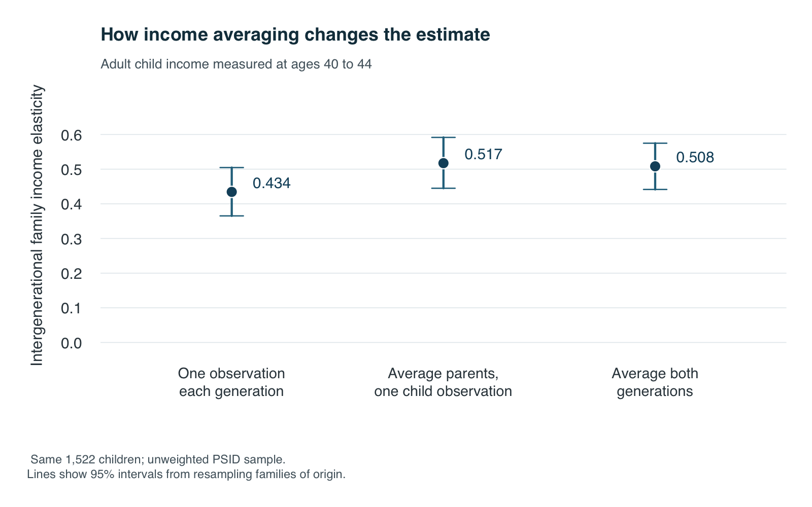
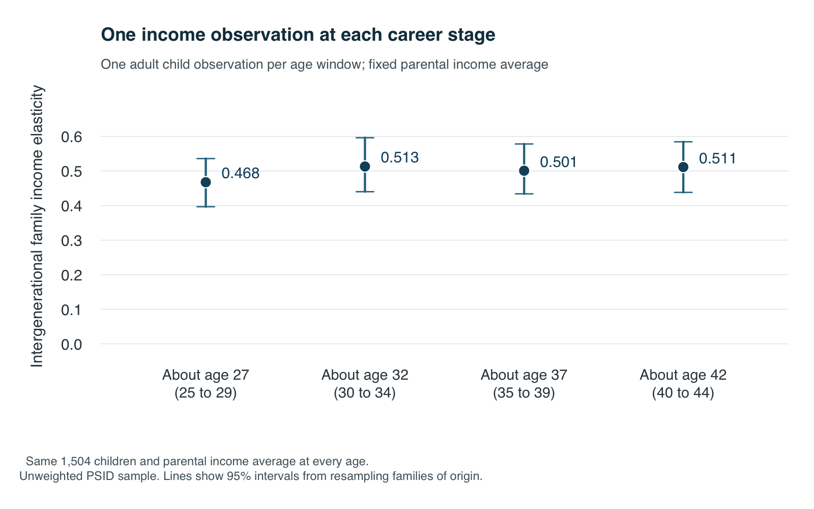

Could a single year’s income make economic opportunity look more open than it is? A bonus, a layoff or the start of a career may say little about a family’s usual resources. Mistaking temporary differences for lasting ones could weaken the measured connection between parents and children.
I match real Panel Study of Income Dynamics records using SQL inside Python. The averaging comparison uses 1,522 adult children. A second comparison changes the child’s measurement age while keeping parental income fixed.
Build the match
The replication guide lists the variables and setup. Python reads the Excel extracts and creates four tables in memory. R checks the aggregate outputs and draws the figures.
| Table | One row represents | Key |
|---|---|---|
people |
One person | id68, pn |
parent_links |
One child and a biological parent | Child ID and parent type |
person_years |
One current family member in a wave | Person ID and survey year |
family_years |
One family’s income in a wave | Survey year and interview number |
The FIMS parent map supplies each parent’s ID. The 1968 family identifier, id68, and person number, pn, identify someone together. A family’s interview number identifies it only within a survey year.
- Join the people.
JOINconnects parent links to yearly records using complete person IDs. Matching survey year and interview number identifies a co-resident parent who is a reference person or spouse/partner. - Find the income. Another
JOINattaches family income using survey year and interview number.SELECTkeeps needed columns. Income covers the previous calendar year, so interview age minus one approximates income age. - Count each household once. Two parents can supply the same income.
SELECT DISTINCTremoves that duplicate.GROUP BYgathers observations, andAVGcalculates parental income.HAVINGrequires at least three observations around child ages 15 to 19. - Repeat for adulthood. The query averages the child’s family income as a reference person or spouse/partner, requiring two observations per age window. The final join produces one row per child.
Show the complete matching SQL
-- The input tables contain only current family members and use income-year
-- ages. Parent resources are measured in the child's co-resident family.
-- A five-calendar-year window need not contain five survey observations.
WITH eligible_children AS (
SELECT id68, pn, birth_year_proxy
FROM people
WHERE birth_year_proxy BETWEEN :birth_min AND :birth_max
),
parent_observations AS (
SELECT DISTINCT c.id68, c.pn, f.survey_year, f.income_year,
f.interview_number, f.family_income, cy.income_age
FROM eligible_children AS c
JOIN parent_links AS l
ON l.child_id68 = c.id68 AND l.child_pn = c.pn
JOIN person_years AS cy
ON cy.id68 = c.id68 AND cy.pn = c.pn
JOIN person_years AS py
ON py.id68 = l.parent_id68 AND py.pn = l.parent_pn
AND py.survey_year = cy.survey_year
AND py.interview_number = cy.interview_number
JOIN family_years AS f
ON f.survey_year = cy.survey_year
AND f.interview_number = cy.interview_number
WHERE py.is_reference_or_partner = 1
AND cy.income_age BETWEEN :p_start AND :p_end
AND f.family_income IS NOT NULL
),
parent_ranked AS (
SELECT *, ROW_NUMBER() OVER (
PARTITION BY id68, pn
ORDER BY ABS(income_age - :p_midpoint), income_year,
survey_year, interview_number
) AS midpoint_rank
FROM parent_observations
),
parent_measures AS (
SELECT id68, pn,
AVG(family_income) AS parent_income,
MAX(CASE WHEN midpoint_rank = 1 THEN family_income END)
AS parent_single,
COUNT(DISTINCT income_year) AS parent_n,
AVG(income_age) AS parent_mean_age,
MAX(CASE WHEN midpoint_rank = 1 THEN income_age END)
AS parent_single_age,
MAX(CASE WHEN midpoint_rank = 1 THEN income_year END)
AS parent_single_year,
MIN(income_year) AS parent_first_year,
MAX(income_year) AS parent_last_year
FROM parent_ranked
GROUP BY id68, pn
HAVING COUNT(DISTINCT income_year) >= :p_min_obs
AND AVG(family_income) > 0
),
child_observations AS (
SELECT c.id68, c.pn, f.survey_year, f.income_year,
f.interview_number, f.family_income, cy.income_age
FROM eligible_children AS c
JOIN person_years AS cy
ON cy.id68 = c.id68 AND cy.pn = c.pn
JOIN family_years AS f
ON f.survey_year = cy.survey_year
AND f.interview_number = cy.interview_number
WHERE cy.is_reference_or_partner = 1
AND cy.income_age BETWEEN :c_start AND :c_end
AND f.family_income IS NOT NULL
),
child_ranked AS (
SELECT *, ROW_NUMBER() OVER (
PARTITION BY id68, pn
ORDER BY ABS(income_age - :c_midpoint), income_year,
survey_year, interview_number
) AS midpoint_rank
FROM child_observations
),
child_measures AS (
SELECT id68, pn,
AVG(family_income) AS child_income,
MAX(CASE WHEN midpoint_rank = 1 THEN family_income END)
AS child_single,
COUNT(DISTINCT income_year) AS child_n,
AVG(income_age) AS child_mean_age,
MAX(CASE WHEN midpoint_rank = 1 THEN income_age END)
AS child_single_age,
MAX(CASE WHEN midpoint_rank = 1 THEN income_year END)
AS child_single_year,
MIN(income_year) AS child_first_year,
MAX(income_year) AS child_last_year
FROM child_ranked
GROUP BY id68, pn
HAVING COUNT(DISTINCT income_year) >= :c_min_obs
AND AVG(family_income) > 0
)
SELECT c.id68, c.pn, c.birth_year_proxy,
p.parent_income, p.parent_single, p.parent_n, p.parent_mean_age,
p.parent_single_age, p.parent_single_year, p.parent_first_year, p.parent_last_year,
a.child_income, a.child_single, a.child_n, a.child_mean_age,
a.child_single_age, a.child_single_year, a.child_first_year, a.child_last_year
FROM eligible_children AS c
JOIN parent_measures AS p ON p.id68 = c.id68 AND p.pn = c.pn
JOIN child_measures AS a ON a.id68 = c.id68 AND a.pn = c.pn
ORDER BY c.id68, c.pn;With biennial interviews from 1999, these averages contain a median of 4 parental observations and 2 mature adult observations. SQL also selects one observation nearest each age-window midpoint, breaking ties toward the earlier year.
Python passes age limits through pd.read_sql_query. Run python tutorial_real.py for a complete example with imports, database setup and comparison calls. The guide explains how to match other years.
Show the complete Python setup and comparison example
"""Run the article's main comparisons from two locally supplied workbooks.
Only aggregate estimates are printed. Normalized tables and matched records
remain in memory. Use real_analysis.py for the full saved tables and figures.
"""
from __future__ import annotations
# BEGIN setup
import argparse
from pathlib import Path
from types import SimpleNamespace
import numpy as np
import pandas as pd
from real_analysis import (
AGE_WINDOWS, POST, annual_cpi, check, load_memory_database, normalize,
query_pairs, read_excel_local, read_waves, slope_and_cluster_se,
)
def setup_database(extract_path, fims_path):
"""Read both workbooks and load the four normalized tables into SQLite."""
waves = read_waves(POST / "config/psid_waves.csv")
cpi = annual_cpi(POST / "data/public/CPIAUCNS.csv")
extract = read_excel_local(extract_path)
fims = read_excel_local(fims_path)
tables, _, _ = normalize(extract, fims, waves, cpi)
return load_memory_database(tables)
# END setup
# BEGIN query
def compare(conn, args=None):
"""Estimate three comparisons using the article's final common sample."""
if args is None:
args = SimpleNamespace(birth_min=1960, birth_max=1978)
matches = {ages: query_pairs(conn, ages, args) for ages in AGE_WINDOWS}
common = matches[(40, 44)].index
for pairs in matches.values():
common = common.intersection(pairs.index)
check(len(common) >= 100, "Fewer than 100 children match in all age windows.")
mature = matches[(40, 44)].loc[common]
positive_single = mature.parent_single.gt(0) & mature.child_single.gt(0)
common = common[positive_single]
check(len(common) >= 100, "Fewer than 100 children have positive single incomes.")
mature = matches[(40, 44)].loc[common]
groups = common.get_level_values("id68").to_numpy()
models = {
"one_year_each": (mature.parent_single, mature.child_single),
"averaged_parent_one_year_child": (mature.parent_income, mature.child_single),
"averaged_each_age40_44": (mature.parent_income, mature.child_income),
}
rows = []
for measure, (parent, child) in models.items():
parent, child = parent.to_numpy(), child.to_numpy()
check(np.isfinite(parent).all() and np.isfinite(child).all()
and (parent > 0).all() and (child > 0).all(),
"Nonpositive or nonfinite regression inputs.")
slope, se, clusters = slope_and_cluster_se(parent, child, groups)
rows.append({"measure": measure, "children": len(common),
"origin_family_clusters": clusters, "ige": slope,
"cluster_se": se})
return pd.DataFrame(rows)
def run_example(extract_path, fims_path):
conn = setup_database(extract_path, fims_path)
try:
return compare(conn, SimpleNamespace(birth_min=1960, birth_max=1978))
finally:
conn.close()
# END query
def main():
parser = argparse.ArgumentParser(description=__doc__)
parser.add_argument("--extract", type=Path,
default=POST / "data/raw/J366591/J366591.xlsx")
parser.add_argument("--fims", type=Path,
default=POST / "data/raw/fim16227_gid_BO_2_BAL.xlsx")
args = parser.parse_args()
estimates = run_example(args.extract, args.fims)
print(estimates.to_string(index=False, float_format="%.3f"))
if __name__ == "__main__":
main()def query_pairs(conn, age_window, args):
start, end = age_window
params = {"birth_min": args.birth_min, "birth_max": args.birth_max,
"p_start": 15, "p_end": 19, "p_min_obs": 3, "p_midpoint": 17,
"c_start": start, "c_end": end, "c_min_obs": 2, "c_midpoint": (start + end) // 2}
pairs = pd.read_sql_query((POST / "sql/match_real.sql").read_text(), conn, params=params)
check(not pairs.duplicated(KEY).any(), "SQL returned duplicate children.")
return pairs.set_index(KEY).sort_index()Compare the income measures
The intergenerational elasticity, or IGE, is the slope in
\[ \log(\text{adult child family income}) = \alpha + \beta\log(\text{parental family income}) + \varepsilon. \]
At the averaged estimate, 10% higher parental income is associated with about 5.0% higher adult child family income. Higher IGE means greater persistence. Income is averaged in 2022 dollars before taking logarithms. np.linalg.lstsq fits the line; uncertainty calculations account for related children.
Show the Python regression and uncertainty calculation
def slope_and_cluster_se(parent, child, groups, controls=None):
x, y = np.log(parent), np.log(child)
X = np.column_stack([np.ones(len(x)), x])
if controls is not None:
X = np.column_stack([X, controls])
check(np.linalg.matrix_rank(X) == X.shape[1], "Regression design is rank deficient.")
beta = np.linalg.lstsq(X, y, rcond=None)[0]
residual = y - X @ beta
codes, labels = pd.factorize(groups)
G, N, K = len(labels), len(y), X.shape[1]
check(G > 1 and N > K, "Insufficient observations or clusters.")
scores = np.zeros((G, K))
np.add.at(scores, codes, X * residual[:, None])
bread = np.linalg.inv(X.T @ X)
variance = (G / (G - 1)) * ((N - 1) / (N - K)) * bread @ (scores.T @ scores) @ bread
# Independent scalar covariance identity cross-checks the simple OLS slope.
if controls is None:
independent = np.sum((x - x.mean()) * (y - y.mean())) / np.sum((x - x.mean()) ** 2)
check(np.isclose(beta[1], independent, rtol=1e-11), "OLS cross-check failed.")
return float(beta[1]), float(np.sqrt(max(variance[1, 1], 0))), GFigure 1 gives 0.434 using one observation per generation and 0.508 using averages. Averaging parental income alone gives 0.517; averaging adult income does not raise the point estimate further. Multiple observations can reduce an unusual year’s influence, but need not increase the estimate.
Check the child’s career stage
Figure 2 uses one child income observation near ages 27, 32, 37 and 42, with parental income fixed. Requiring positive selected incomes at every stage leaves 1,504 children, held constant across ages. The youngest and oldest estimates are 0.468 and 0.511. Their difference has a 95% interval from -0.023 to 0.122, including zero, so the age evidence is inconclusive.

Life-cycle bias remains a concern. Hypothetically, if early-career log-income gaps are half their lifetime size, the estimated slope would be halved too. Haider and Solon (2006) explain why career snapshots can misrepresent lasting income. Averaging several early years may still miss later differences.
These unweighted results describe selected families. Calendar periods and family circumstances change with age. Family income includes partners’ resources, and membership is observed at interview. The true lifetime IGE remains unknown; these associations establish no causal effect.
The main takeaways are:
- Match full person IDs and the correct family-year, then remove duplicate household incomes.
- Averaging parental income reveals a stronger connection here; its effect differs across generations.
- One career snapshot need not represent lifetime resources; this sample’s age comparison remains inconclusive.